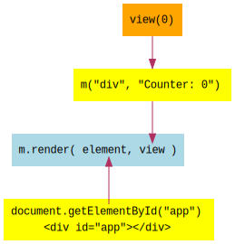

In the previous lesson, 01 - Hello World, we rendered a simple, static message onto the page. Now, let's write a function that dynamically produces what to render, based on a model. We'll call this the view function.
The view function produces the vnode to render. Since it is a function, it can receive
parameters - namely, the model. The model is a plain JavaScript object that represents the
state of the application.
In our example, the model is a counter. We'll create an initial model with a value of 0.
When rendering with m.render, we pass the DOM element as before, but instead of hardcoding
what to render, we pass the result of calling the view function with the value
0.

Within the view function, we can create a view as we see fit, using the model. In this
case, we are simply creating a div element with the text Counter: and the value that was
passed in:
This concept of having the view as a function of the model is important. The resulting view depends only on what is passed in to the function. This makes it simple to write view functions and understand how they work and what they are doing. The view is produced without reaching out to external code, without pulling in state that is stored elsewhere, and so on. It is just a simple function of the model.
view function, and seeing the results.view function so that it produces something different.view function, try passing in an object such as
{ label: "The Counter", value: 0 } as the model. Change the view function so that it uses the
model to produce the view.In the next lesson, we will learn how to let the user increment the counter by clicking on a button. The button will trigger code that adds 1 to the model and re-renders the view.
When you are ready, continue on to 03 - Update Model.
Meiosis is developed by @foxdonut00 / foxdonut and is released under the MIT license.